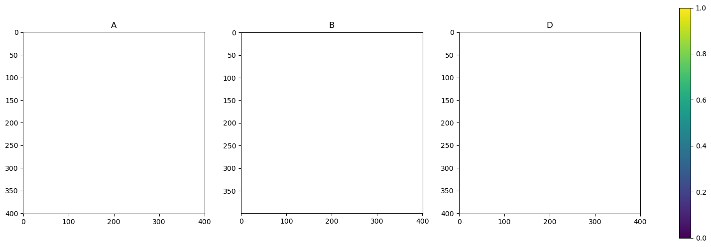

mpl.rcParams["figure.figsize"] = (20, 6)Model
Monkey patches (account for missing observations)
NBinom sampler is slow (https://github.com/tensorflow/probability/issues/1843)
Nans
Hyperparameters
States
Let \(\bar r_t = \log \bar \rho_t\) be the average growth factor (on the log scale) across all counties and \(u_t^c\) be the deviation of county \(c\)’s log-growth factor for \(\bar r_t\). We model \(\bar r_t\) following a random walk and \(u^\cdot_t\) following an \(\text{VAR}(1)\) process with transition matrix \(\alpha I\) and spatial correlation \(\Omega\).
Thus we have \[ \begin{align*} \bar r_{t + 1} &= \bar r_{t} + \varepsilon_{t + 1}^\rho \\ u^c_{t + 1} &= \alpha u^c_t + \varepsilon_{t + 1}^c \end{align*} \]
with \(\text{Var}(\varepsilon_{t + 1}^\rho) = \sigma^2_\rho\) and \(\text{Cov}(\varepsilon_{t + 1}) = \Omega\). The covariance matrix of the stationary distribution is \(\Sigma = \frac {1} {1 - \alpha^2} \Omega\).
Observations
The log growth factor in a region at time \(t\), \(r^c_t\), is given by the mean log growth factor \(\bar r_t\) and the per-region deviation \(u^c_t\). Conditional on the log growth factors and past cases, cases are Negative Binomially distributed with shared overdispersion parameter \(r\) \[ \begin{align*} r^c_t &= \bar r_t + u^c_{t} \\ \lambda_t^c &= \exp(r^c_t) \sum_{d}p_{c,d} I_t^d \\ I^c_{t + 1} | I^c_{t}, \rho_t, u^c_t &\sim \text{NegBinom}(\underbrace{\lambda_t^c}_{\text{mean}}, \underbrace{r}_{\text{overdispersion}}) \end{align*} \]
where the variance of the negative binomial distribution is \(\mu + \frac{\mu^2}{r}\)
Spatial Correlations
Suppose we have in county \(c\) \(S^c\) many new infections generated, which may be attributed to the same county or another one, \(c'\) say. Let \(p_{c,c'}\) be the fraction of cases generated in county \(c'\) (instead of in county \(c\)) and \(p_{c,c} = 1 - \sum_{c' \neq c} p_{c,c'}\).
Let \(P = \left(p_{c,c'}\right)_{c = 1, \dots, K, c' = 1,\dots, K}\).
Let \(\tilde S^c = \sum p_{c,d} S^d\) be the number of cases generated in county \(c\).
Then we are interested in
\[ \begin{align*} \text{Cov}(\tilde S^c, \tilde S^{c'}) = \underbrace{\sigma^2}_{\text{Var}(S^c)} (\sum_{d} p_{c,d} p_{c',d}) = \sigma^2_{\text{spat}} (P P^T)_{c, c'} \end{align*} \]
To obtain \(p_{c,c'}\) we use data on commuters \(q_{c,c'}\) the fraction of socially insured employees that have their center of life in county \(c\) but are registered to work in county \(c'\).
To account for non-working inhabitants (elderly, kids, …) we introduce a constant \(C \geq 1\) s.t. \[ p_{c,c'} = \bar q + (1 - \bar q)\frac{\mathbf 1 _{c \neq c'} q_{c,c'}}{ \sum_{d \neq c} q_{c,d} + C q_{c,c}}, \] i.e. we blow up the proportion of “stay at home” by a constant \(C\) (that is the same for all counties) and add a constant “socket” of travel \(\bar q\) between the counties.
Finally we choose
\[ \Omega = \sigma^2_{\text{spat}}PP^T %+ \sigma^2_{\text{nugget}} I \]
Parameters
\[ \theta = \left( \text{logit}(\alpha), \log \sigma^2_r, \log \sigma^2_{\text{spat}}, C, \log \mu \right)%\log \sigma^2_{\text{nugget}}, \log \mu \right) \]
Final Model
n_pop.sum() / n_tot.sum()Array(2.48634886, dtype=float64)plt.imshow(jnp.log(n_ij))
plt.colorbar()
plt.show()P = _P(1.0, 0.5, n_ij, n_tot)
plt.imshow(P)
plt.colorbar()
plt.show()
par_manual = jnp.array(
[
0.5,
0.01**2,
0.01**2,
0.5,
2,
100.0,
]
)
theta_manual = par_to_theta(par_manual)
np1 = 10
# aux = (cases_full[: np1 + 1], n_ij, n_tot)
dates = dates_full[14 + 1 : 14 + np1 + 1]
aux = make_aux(dates[0], cases_full, n_ij, n_tot, np1)
y = aux[0][1:]
y_nan = y.at[-1].set(jnp.nan)
missing_inds = jnp.isnan(y_nan)
_, y_miss = account_for_nans(
growth_factor_model(theta_manual, aux), y_nan, missing_inds
)
_model_miss = lambda theta, aux: account_for_nans(
growth_factor_model(theta, aux), y_nan, missing_inds
)[0]plt.plot(dates, y_nan.sum(axis=-1))
plt.show()
from ssm4epi.models.util import visualize_pgssmtheta_manual = jnp.array([0.0, -2.063e00, -5.355e00, -4.511e-01, -5.711e-01, 7.932e-01])
model = growth_factor_model(theta_manual, aux)
visualize_pgssm(model)

from isssm.estimation import initial_theta
import jaxtheta0_result = initial_theta(
y_miss,
_model_miss,
theta_manual,
aux,
n_iterations,
options={"maxiter": 10},
)
theta0 = theta0_result.x
theta0_resultWARNING:2025-09-10 16:53:41,762:jax._src.dispatch:195: Finished tracing + transforming less for pjit in 0.000406027 sec
WARNING:2025-09-10 16:53:41,764:jax._src.dispatch:195: Finished tracing + transforming add for pjit in 0.000602722 sec
WARNING:2025-09-10 16:53:41,766:jax._src.dispatch:195: Finished tracing + transforming true_divide for pjit in 0.000133038 sec
WARNING:2025-09-10 16:53:41,767:jax._src.dispatch:195: Finished tracing + transforming log for pjit in 0.000097990 sec
WARNING:2025-09-10 16:53:41,768:jax._src.dispatch:195: Finished tracing + transforming nan_to_num for pjit in 0.000541925 sec
WARNING:2025-09-10 16:53:41,769:jax._src.dispatch:195: Finished tracing + transforming absolute for pjit in 0.000072241 sec
WARNING:2025-09-10 16:53:41,769:jax._src.dispatch:195: Finished tracing + transforming abs for pjit in 0.000423908 sec
WARNING:2025-09-10 16:53:41,769:jax._src.dispatch:195: Finished tracing + transforming less for pjit in 0.000145197 sec
WARNING:2025-09-10 16:53:41,770:jax._src.dispatch:195: Finished tracing + transforming subtract for pjit in 0.000174999 sec
WARNING:2025-09-10 16:53:41,771:jax._src.dispatch:195: Finished tracing + transforming _broadcast_arrays for pjit in 0.000046968 sec
WARNING:2025-09-10 16:53:41,772:jax._src.dispatch:195: Finished tracing + transforming _where for pjit in 0.000665188 sec
WARNING:2025-09-10 16:53:41,773:jax._src.dispatch:195: Finished tracing + transforming _reduce_max for pjit in 0.000240326 sec
WARNING:2025-09-10 16:53:41,773:jax._src.dispatch:195: Finished tracing + transforming less for pjit in 0.000130177 sec
WARNING:2025-09-10 16:53:41,774:jax._src.dispatch:195: Finished tracing + transforming _reduce_sum for pjit in 0.000226974 sec
WARNING:2025-09-10 16:53:41,775:jax._src.dispatch:195: Finished tracing + transforming greater for pjit in 0.000157356 sec
WARNING:2025-09-10 16:53:41,775:jax._src.dispatch:195: Finished tracing + transforming logical_or for pjit in 0.000170231 sec
WARNING:2025-09-10 16:53:41,776:jax._src.dispatch:195: Finished tracing + transforming greater for pjit in 0.000109911 sec
WARNING:2025-09-10 16:53:41,776:jax._src.dispatch:195: Finished tracing + transforming logical_and for pjit in 0.000152111 sec
WARNING:2025-09-10 16:53:41,777:jax._src.dispatch:195: Finished tracing + transforming absolute for pjit in 0.000088930 sec
WARNING:2025-09-10 16:53:41,777:jax._src.dispatch:195: Finished tracing + transforming abs for pjit in 0.000423908 sec
WARNING:2025-09-10 16:53:41,777:jax._src.dispatch:195: Finished tracing + transforming less for pjit in 0.000179052 sec
WARNING:2025-09-10 16:53:41,778:jax._src.dispatch:195: Finished tracing + transforming subtract for pjit in 0.000145912 sec
WARNING:2025-09-10 16:53:41,778:jax._src.dispatch:195: Finished tracing + transforming true_divide for pjit in 0.000113964 sec
WARNING:2025-09-10 16:53:41,779:jax._src.dispatch:195: Finished tracing + transforming _broadcast_arrays for pjit in 0.000091791 sec
WARNING:2025-09-10 16:53:41,780:jax._src.dispatch:195: Finished tracing + transforming _where for pjit in 0.001399040 sec
WARNING:2025-09-10 16:53:41,781:jax._src.dispatch:195: Finished tracing + transforming _reduce_max for pjit in 0.000164986 sec
WARNING:2025-09-10 16:53:41,782:jax._src.dispatch:195: Finished tracing + transforming isnan for pjit in 0.000300884 sec
WARNING:2025-09-10 16:53:41,783:jax._src.dispatch:195: Finished tracing + transforming _reduce_sum for pjit in 0.000313044 sec
WARNING:2025-09-10 16:53:41,784:jax._src.dispatch:195: Finished tracing + transforming logical_and for pjit in 0.000113964 sec
WARNING:2025-09-10 16:53:41,785:jax._src.dispatch:195: Finished tracing + transforming greater_equal for pjit in 0.000187874 sec
WARNING:2025-09-10 16:53:41,785:jax._src.dispatch:195: Finished tracing + transforming logical_or for pjit in 0.000150919 sec
WARNING:2025-09-10 16:53:41,786:jax._src.dispatch:195: Finished tracing + transforming logical_not for pjit in 0.000149012 sec
WARNING:2025-09-10 16:53:41,788:jax._src.dispatch:195: Finished tracing + transforming _moveaxis for pjit in 0.000045061 sec
WARNING:2025-09-10 16:53:41,791:jax._src.dispatch:195: Finished tracing + transforming add for pjit in 0.000182152 sec
WARNING:2025-09-10 16:53:41,792:jax._src.dispatch:195: Finished tracing + transforming subtract for pjit in 0.000098944 sec
WARNING:2025-09-10 16:53:41,794:jax._src.dispatch:195: Finished tracing + transforming negative for pjit in 0.000076056 sec
WARNING:2025-09-10 16:53:41,796:jax._src.dispatch:195: Finished tracing + transforming logaddexp for pjit in 0.000512838 sec
WARNING:2025-09-10 16:53:41,796:jax._src.dispatch:195: Finished tracing + transforming softplus for pjit in 0.000856161 sec
WARNING:2025-09-10 16:53:41,804:jax._src.dispatch:195: Finished tracing + transforming multiply for pjit in 0.000097036 sec
WARNING:2025-09-10 16:53:41,806:jax._src.dispatch:195: Finished tracing + transforming equal for pjit in 0.000121117 sec
WARNING:2025-09-10 16:53:41,809:jax._src.dispatch:195: Finished tracing + transforming _broadcast_arrays for pjit in 0.000042200 sec
WARNING:2025-09-10 16:53:41,809:jax._src.dispatch:195: Finished tracing + transforming _where for pjit in 0.000612974 sec
WARNING:2025-09-10 16:53:41,812:jax._src.dispatch:195: Finished tracing + transforming add for pjit in 0.000124931 sec
WARNING:2025-09-10 16:53:41,815:jax._src.dispatch:195: Finished tracing + transforming minimum for pjit in 0.000147104 sec
WARNING:2025-09-10 16:53:41,818:jax._src.dispatch:195: Finished tracing + transforming maximum for pjit in 0.000100851 sec
WARNING:2025-09-10 16:53:41,821:jax._src.dispatch:195: Finished tracing + transforming reciprocal for pjit in 0.000078201 sec
WARNING:2025-09-10 16:53:41,832:jax._src.dispatch:195: Finished tracing + transforming true_divide for pjit in 0.000099897 sec
WARNING:2025-09-10 16:53:41,834:jax._src.dispatch:195: Finished tracing + transforming log1p for pjit in 0.000094175 sec
WARNING:2025-09-10 16:53:41,844:jax._src.dispatch:195: Finished tracing + transforming greater_equal for pjit in 0.000143051 sec
WARNING:2025-09-10 16:53:41,848:jax._src.dispatch:195: Finished tracing + transforming _reduce_sum for pjit in 0.000167847 sec
WARNING:2025-09-10 16:53:41,849:jax._src.dispatch:195: Finished tracing + transforming nansum for pjit in 0.000777006 sec
WARNING:2025-09-10 16:53:41,852:jax._src.dispatch:195: Finished tracing + transforming default_log_lik for pjit in 0.066179037 sec
WARNING:2025-09-10 16:53:41,973:jax._src.dispatch:195: Finished tracing + transforming default_log_lik for pjit in 0.119926691 sec
WARNING:2025-09-10 16:53:41,973:jax._src.dispatch:195: Finished tracing + transforming negative for pjit in 0.000135899 sec
WARNING:2025-09-10 16:53:41,974:jax._src.dispatch:195: Finished tracing + transforming true_divide for pjit in 0.000199080 sec
WARNING:2025-09-10 16:53:41,975:jax._src.dispatch:195: Finished tracing + transforming nan_to_num for pjit in 0.000527143 sec
WARNING:2025-09-10 16:53:41,976:jax._src.dispatch:195: Finished tracing + transforming diag for pjit in 0.001023054 sec
WARNING:2025-09-10 16:53:41,977:jax._src.dispatch:195: Finished tracing + transforming multiply for pjit in 0.000167847 sec
WARNING:2025-09-10 16:53:41,977:jax._src.dispatch:195: Finished tracing + transforming add for pjit in 0.000102758 sec
WARNING:2025-09-10 16:53:41,979:jax._src.dispatch:195: Finished tracing + transforming matmul for pjit in 0.000211000 sec
WARNING:2025-09-10 16:53:41,980:jax._src.dispatch:195: Finished tracing + transforming add for pjit in 0.000136852 sec
WARNING:2025-09-10 16:53:41,981:jax._src.dispatch:195: Finished tracing + transforming matmul for pjit in 0.000247955 sec
WARNING:2025-09-10 16:53:41,982:jax._src.dispatch:195: Finished tracing + transforming add for pjit in 0.000103951 sec
WARNING:2025-09-10 16:53:41,982:jax._src.dispatch:195: Finished tracing + transforming matmul for pjit in 0.000202894 sec
WARNING:2025-09-10 16:53:41,983:jax._src.dispatch:195: Finished tracing + transforming add for pjit in 0.000097990 sec
WARNING:2025-09-10 16:53:41,983:jax._src.dispatch:195: Finished tracing + transforming matmul for pjit in 0.000147104 sec
WARNING:2025-09-10 16:53:41,984:jax._src.dispatch:195: Finished tracing + transforming matmul for pjit in 0.000157833 sec
WARNING:2025-09-10 16:53:41,984:jax._src.dispatch:195: Finished tracing + transforming matmul for pjit in 0.000148058 sec
WARNING:2025-09-10 16:53:41,985:jax._src.dispatch:195: Finished tracing + transforming conjugate for pjit in 0.000041962 sec
WARNING:2025-09-10 16:53:41,986:jax._src.dispatch:195: Finished tracing + transforming multiply for pjit in 0.000121832 sec
WARNING:2025-09-10 16:53:41,986:jax._src.dispatch:195: Finished tracing + transforming true_divide for pjit in 0.000140190 sec
WARNING:2025-09-10 16:53:41,987:jax._src.dispatch:195: Finished tracing + transforming less for pjit in 0.000146866 sec
WARNING:2025-09-10 16:53:41,988:jax._src.dispatch:195: Finished tracing + transforming take_along_axis for pjit in 0.000781059 sec
WARNING:2025-09-10 16:53:41,988:jax._src.dispatch:195: Finished tracing + transforming multiply for pjit in 0.000093937 sec
WARNING:2025-09-10 16:53:41,989:jax._src.dispatch:195: Finished tracing + transforming svd for pjit in 0.002874136 sec
WARNING:2025-09-10 16:53:41,989:jax._src.dispatch:195: Finished tracing + transforming multiply for pjit in 0.000097752 sec
WARNING:2025-09-10 16:53:41,990:jax._src.dispatch:195: Finished tracing + transforming greater for pjit in 0.000099182 sec
WARNING:2025-09-10 16:53:41,990:jax._src.dispatch:195: Finished tracing + transforming _broadcast_arrays for pjit in 0.000102043 sec
WARNING:2025-09-10 16:53:41,991:jax._src.dispatch:195: Finished tracing + transforming _where for pjit in 0.000591040 sec
WARNING:2025-09-10 16:53:41,991:jax._src.dispatch:195: Finished tracing + transforming matmul for pjit in 0.000144958 sec
WARNING:2025-09-10 16:53:41,992:jax._src.dispatch:195: Finished tracing + transforming _pinv for pjit in 0.006607056 sec
WARNING:2025-09-10 16:53:41,992:jax._src.dispatch:195: Finished tracing + transforming matmul for pjit in 0.000155687 sec
WARNING:2025-09-10 16:53:41,993:jax._src.dispatch:195: Finished tracing + transforming subtract for pjit in 0.000098944 sec
WARNING:2025-09-10 16:53:41,993:jax._src.dispatch:195: Finished tracing + transforming matmul for pjit in 0.000132084 sec
WARNING:2025-09-10 16:53:41,994:jax._src.dispatch:195: Finished tracing + transforming matmul for pjit in 0.000136137 sec
WARNING:2025-09-10 16:53:41,994:jax._src.dispatch:195: Finished tracing + transforming subtract for pjit in 0.000111818 sec
WARNING:2025-09-10 16:53:41,996:jax._src.dispatch:195: Finished tracing + transforming matmul for pjit in 0.000130892 sec
WARNING:2025-09-10 16:53:41,996:jax._src.dispatch:195: Finished tracing + transforming matmul for pjit in 0.000154734 sec
WARNING:2025-09-10 16:53:41,997:jax._src.dispatch:195: Finished tracing + transforming add for pjit in 0.000122786 sec
WARNING:2025-09-10 16:53:41,997:jax._src.dispatch:195: Finished tracing + transforming conjugate for pjit in 0.000037193 sec
WARNING:2025-09-10 16:53:41,998:jax._src.dispatch:195: Finished tracing + transforming true_divide for pjit in 0.000208855 sec
WARNING:2025-09-10 16:53:41,999:jax._src.dispatch:195: Finished tracing + transforming less for pjit in 0.000131130 sec
WARNING:2025-09-10 16:53:42,000:jax._src.dispatch:195: Finished tracing + transforming take_along_axis for pjit in 0.000813007 sec
WARNING:2025-09-10 16:53:42,000:jax._src.dispatch:195: Finished tracing + transforming multiply for pjit in 0.000101089 sec
WARNING:2025-09-10 16:53:42,000:jax._src.dispatch:195: Finished tracing + transforming svd for pjit in 0.002799749 sec
WARNING:2025-09-10 16:53:42,001:jax._src.dispatch:195: Finished tracing + transforming multiply for pjit in 0.000154018 sec
WARNING:2025-09-10 16:53:42,001:jax._src.dispatch:195: Finished tracing + transforming greater for pjit in 0.000124931 sec
WARNING:2025-09-10 16:53:42,002:jax._src.dispatch:195: Finished tracing + transforming _broadcast_arrays for pjit in 0.000104189 sec
WARNING:2025-09-10 16:53:42,002:jax._src.dispatch:195: Finished tracing + transforming _where for pjit in 0.000529289 sec
WARNING:2025-09-10 16:53:42,003:jax._src.dispatch:195: Finished tracing + transforming true_divide for pjit in 0.000099897 sec
WARNING:2025-09-10 16:53:42,003:jax._src.dispatch:195: Finished tracing + transforming matmul for pjit in 0.000154972 sec
WARNING:2025-09-10 16:53:42,004:jax._src.dispatch:195: Finished tracing + transforming _pinv for pjit in 0.006548166 sec
WARNING:2025-09-10 16:53:42,004:jax._src.dispatch:195: Finished tracing + transforming matmul for pjit in 0.000156879 sec
WARNING:2025-09-10 16:53:42,005:jax._src.dispatch:195: Finished tracing + transforming matmul for pjit in 0.000136852 sec
WARNING:2025-09-10 16:53:42,006:jax._src.dispatch:195: Finished tracing + transforming matmul for pjit in 0.000227928 sec
WARNING:2025-09-10 16:53:42,006:jax._src.dispatch:195: Finished tracing + transforming matmul for pjit in 0.000137091 sec
WARNING:2025-09-10 16:53:42,007:jax._src.dispatch:195: Finished tracing + transforming matmul for pjit in 0.000130177 sec
WARNING:2025-09-10 16:53:42,008:jax._src.dispatch:195: Finished tracing + transforming subtract for pjit in 0.000123739 sec
WARNING:2025-09-10 16:53:42,008:jax._src.dispatch:195: Finished tracing + transforming matmul for pjit in 0.000163078 sec
WARNING:2025-09-10 16:53:42,009:jax._src.dispatch:195: Finished tracing + transforming add for pjit in 0.000091791 sec
WARNING:2025-09-10 16:53:42,012:jax._src.dispatch:195: Finished tracing + transforming _reduce_max for pjit in 0.000144243 sec
WARNING:2025-09-10 16:53:42,022:jax._src.dispatch:195: Finished tracing + transforming eigh for pjit in 0.000345230 sec
WARNING:2025-09-10 16:53:42,023:jax._src.dispatch:195: Finished tracing + transforming sqrt for pjit in 0.000092268 sec
WARNING:2025-09-10 16:53:42,024:jax._src.dispatch:195: Finished tracing + transforming _einsum for pjit in 0.000160933 sec
WARNING:2025-09-10 16:53:42,024:jax._src.dispatch:195: Finished tracing + transforming qr for pjit in 0.000129938 sec
WARNING:2025-09-10 16:53:42,025:jax._src.dispatch:195: Finished tracing + transforming _einsum for pjit in 0.000421047 sec
WARNING:2025-09-10 16:53:42,025:jax._src.dispatch:195: Finished tracing + transforming sign for pjit in 0.000069857 sec
WARNING:2025-09-10 16:53:42,026:jax._src.dispatch:195: Finished tracing + transforming multiply for pjit in 0.000101089 sec
WARNING:2025-09-10 16:53:42,026:jax._src.dispatch:195: Finished tracing + transforming swapaxes for pjit in 0.000089169 sec
WARNING:2025-09-10 16:53:42,030:jax._src.dispatch:195: Finished tracing + transforming tril for pjit in 0.000482798 sec
WARNING:2025-09-10 16:53:42,030:jax._src.dispatch:195: Finished tracing + transforming _solve_triangular for pjit in 0.000128984 sec
WARNING:2025-09-10 16:53:42,030:jax._src.dispatch:195: Finished tracing + transforming _squeeze for pjit in 0.000077009 sec
WARNING:2025-09-10 16:53:42,033:jax._src.dispatch:195: Finished tracing + transforming true_divide for pjit in 0.000101089 sec
WARNING:2025-09-10 16:53:42,034:jax._src.dispatch:195: Finished tracing + transforming true_divide for pjit in 0.000149965 sec
WARNING:2025-09-10 16:53:42,034:jax._src.dispatch:195: Finished tracing + transforming subtract for pjit in 0.000209808 sec
WARNING:2025-09-10 16:53:42,034:jax._src.dispatch:195: Finished tracing + transforming square for pjit in 0.000081062 sec
WARNING:2025-09-10 16:53:42,035:jax._src.dispatch:195: Finished tracing + transforming multiply for pjit in 0.000244856 sec
WARNING:2025-09-10 16:53:42,035:jax._src.dispatch:195: Finished tracing + transforming subtract for pjit in 0.000092030 sec
WARNING:2025-09-10 16:53:42,036:jax._src.dispatch:195: Finished tracing + transforming _reduce_sum for pjit in 0.000147820 sec
WARNING:2025-09-10 16:53:42,037:jax._src.dispatch:195: Finished tracing + transforming _moveaxis for pjit in 0.000101805 sec
WARNING:2025-09-10 16:53:42,039:jax._src.dispatch:195: Finished tracing + transforming diagonal for pjit in 0.001276016 sec
WARNING:2025-09-10 16:53:42,039:jax._src.dispatch:195: Finished tracing + transforming _reduce_sum for pjit in 0.000138998 sec
WARNING:2025-09-10 16:53:42,039:jax._src.dispatch:195: Finished tracing + transforming negative for pjit in 0.000081301 sec
WARNING:2025-09-10 16:53:42,040:jax._src.dispatch:195: Finished tracing + transforming multiply for pjit in 0.000100136 sec
WARNING:2025-09-10 16:53:42,041:jax._src.dispatch:195: Finished tracing + transforming _reduce_sum for pjit in 0.000157833 sec
WARNING:2025-09-10 16:53:42,041:jax._src.dispatch:195: Finished tracing + transforming add for pjit in 0.000097990 sec
WARNING:2025-09-10 16:53:42,042:jax._src.dispatch:195: Finished tracing + transforming multiply for pjit in 0.000091076 sec
WARNING:2025-09-10 16:53:42,043:jax._src.dispatch:195: Finished tracing + transforming _reduce_sum for pjit in 0.000148058 sec
WARNING:2025-09-10 16:53:42,043:jax._src.dispatch:195: Finished tracing + transforming add for pjit in 0.000092983 sec
WARNING:2025-09-10 16:53:42,043:jax._src.dispatch:195: Finished tracing + transforming subtract for pjit in 0.000096083 sec
WARNING:2025-09-10 16:53:42,044:jax._src.dispatch:195: Finished tracing + transforming isnan for pjit in 0.000069141 sec
WARNING:2025-09-10 16:53:42,044:jax._src.dispatch:195: Finished tracing + transforming _broadcast_arrays for pjit in 0.000259161 sec
WARNING:2025-09-10 16:53:42,045:jax._src.dispatch:195: Finished tracing + transforming _where for pjit in 0.000915766 sec
WARNING:2025-09-10 16:53:42,046:jax._src.dispatch:195: Finished tracing + transforming nan_to_num for pjit in 0.001902103 sec
WARNING:2025-09-10 16:53:42,046:jax._src.dispatch:195: Finished tracing + transforming _reduce_sum for pjit in 0.000159025 sec
WARNING:2025-09-10 16:53:42,047:jax._src.dispatch:195: Finished tracing + transforming _moveaxis for pjit in 0.000089169 sec
WARNING:2025-09-10 16:53:42,048:jax._src.dispatch:195: Finished tracing + transforming logaddexp for pjit in 0.000466824 sec
WARNING:2025-09-10 16:53:42,048:jax._src.dispatch:195: Finished tracing + transforming softplus for pjit in 0.000766039 sec
WARNING:2025-09-10 16:53:42,049:jax._src.dispatch:195: Finished tracing + transforming equal for pjit in 0.000120878 sec
WARNING:2025-09-10 16:53:42,050:jax._src.dispatch:195: Finished tracing + transforming add for pjit in 0.000137091 sec
WARNING:2025-09-10 16:53:42,051:jax._src.dispatch:195: Finished tracing + transforming _broadcast_arrays for pjit in 0.000042200 sec
WARNING:2025-09-10 16:53:42,051:jax._src.dispatch:195: Finished tracing + transforming minimum for pjit in 0.000103951 sec
WARNING:2025-09-10 16:53:42,052:jax._src.dispatch:195: Finished tracing + transforming maximum for pjit in 0.000098705 sec
WARNING:2025-09-10 16:53:42,053:jax._src.dispatch:195: Finished tracing + transforming multiply for pjit in 0.000668049 sec
WARNING:2025-09-10 16:53:42,053:jax._src.dispatch:195: Finished tracing + transforming subtract for pjit in 0.000106096 sec
WARNING:2025-09-10 16:53:42,054:jax._src.dispatch:195: Finished tracing + transforming reciprocal for pjit in 0.000078917 sec
WARNING:2025-09-10 16:53:42,055:jax._src.dispatch:195: Finished tracing + transforming add for pjit in 0.000091314 sec
WARNING:2025-09-10 16:53:42,059:jax._src.dispatch:195: Finished tracing + transforming subtract for pjit in 0.000088930 sec
WARNING:2025-09-10 16:53:42,060:jax._src.dispatch:195: Finished tracing + transforming log1p for pjit in 0.000082254 sec
WARNING:2025-09-10 16:53:42,065:jax._src.dispatch:195: Finished tracing + transforming greater_equal for pjit in 0.000133038 sec
WARNING:2025-09-10 16:53:42,066:jax._src.dispatch:195: Finished tracing + transforming _reduce_sum for pjit in 0.000161171 sec
WARNING:2025-09-10 16:53:42,074:jax._src.dispatch:195: Finished tracing + transforming f for pjit in 0.323371172 sec
WARNING:2025-09-10 16:53:42,079:jax._src.interpreters.pxla:1921: Compiling f with global shapes and types [ShapedArray(float64[6])]. Argument mapping: (UnspecifiedValue,).
WARNING:2025-09-10 16:53:42,116:jax._src.dispatch:195: Finished tracing + transforming less for pjit in 0.000124931 sec
WARNING:2025-09-10 16:53:42,119:jax._src.dispatch:195: Finished tracing + transforming add for pjit in 0.000101805 sec
WARNING:2025-09-10 16:53:42,130:jax._src.dispatch:195: Finished tracing + transforming subtract for pjit in 0.000093937 sec
WARNING:2025-09-10 16:53:42,165:jax._src.dispatch:195: Finished jaxpr to MLIR module conversion jit(f) in 0.085249901 sec
WARNING:2025-09-10 16:53:42,628:jax._src.dispatch:195: Finished XLA compilation of jit(f) in 0.462757111 sec message: Maximum number of iterations has been exceeded.
success: False
status: 1
fun: 2.589380286941821
x: [ 2.364e-02 -2.084e+00 -5.317e+00 -2.621e+00 -3.461e-01
5.767e-01]
nit: 10
jac: [-5.002e-04 6.095e-04 -1.310e-03 -2.502e-04 -2.525e-03
5.648e-04]
hess_inv: [[ 1.024e+00 -3.056e-02 ... 8.890e-02 -8.847e-02]
[-3.056e-02 1.039e+00 ... -1.092e-01 8.973e-02]
...
[ 8.890e-02 -1.092e-01 ... 1.389e+00 -4.194e-01]
[-8.847e-02 8.973e-02 ... -4.194e-01 4.642e+00]]
nfev: 143
njev: 11theta_to_par(theta0)Array([0.50590952, 0.12444421, 0.00490983, 0.0677932 , 1.70743162,
1.78020985], dtype=float64)fitted_model = _model_miss(theta0, aux)LA
from isssm.laplace_approximation import laplace_approximation as LAproposal_la, info_la = LA(y_miss, fitted_model, n_iterations)
info_laConvergenceInformation(converged=Array(True, dtype=bool), n_iter=Array(6, dtype=int64, weak_type=True), delta=Array(2.09558415e-09, dtype=float64))from isssm.importance_sampling import pgssm_importance_sampling, ess_pctkey, subkey = jrn.split(key)
samples, lw = pgssm_importance_sampling(
y_miss,
fitted_model,
proposal_la.z,
proposal_la.Omega,
N_mle,
subkey,
)
ess_pct(lw)Array(98.84955688, dtype=float64)from isssm.laplace_approximation import posterior_mode
plt.plot(jnp.exp(posterior_mode(proposal_la)))
plt.show()
MEIS
from isssm.modified_efficient_importance_sampling import (
modified_efficient_importance_sampling as MEIS,
)key, subkey = jrn.split(key)
proposal_meis, info_meis = MEIS(
y_miss, fitted_model, proposal_la.z, proposal_la.Omega, 10, int(1e3), subkey
)
info_meisConvergenceInformation(converged=Array(True, dtype=bool), n_iter=Array(3, dtype=int64, weak_type=True), delta=Array(nan, dtype=float64))from isssm.importance_sampling import pgssm_importance_sampling, ess_pctkey, subkey = jrn.split(key)
samples, lw = pgssm_importance_sampling(
y_miss,
fitted_model,
proposal_meis.z,
proposal_meis.Omega,
N_mle,
subkey,
)
ess_pct(lw)Array(nan, dtype=float64)Predictions
from isssm.importance_sampling import mc_integration, predictionkey, subkey = jrn.split(key)
def predict_total(x, s, y):
y_county = y[-1]
y_tot = jnp.minimum(y_county, n_tot).sum()[None]
return jnp.concatenate([y_tot, y_county], axis=0)
preds = prediction(
lambda x, s, y: predict_total(x, s, y),
y_miss,
proposal_la,
fitted_model,
1000,
subkey,
percentiles_of_interest,
growth_factor_model(theta0, aux),
)theta0array([ 0.0236392 , -2.0838978 , -5.31651543, -2.62109273, -0.3461143 ,
0.57673125])plt.plot(dates[: np1 + 1], y_nan.sum(axis=-1))
plt.scatter(dates[-1], preds[0][0], color="red")
plt.scatter(dates[-1], preds[2][1, 0], color="grey")
plt.scatter(dates[-1], preds[2][-2, 0], color="grey")
plt.scatter(dates[-1], y[-1].sum(), color="green", marker="x")
plt.show()
# find index of Gütersloh / neighboring Warendorf
jnp.where(ags_full == 5754), jnp.where(ags_full == 5570)((Array([98], dtype=int64),), (Array([96], dtype=int64),))key, subkey = jrn.split(key)
county_index = jrn.randint(subkey, (1,), 0, 400)[0]
# Gütersloh
county_index = 98
plt.title(f"ags = {ags_full[county_index]}")
plt.plot(dates_full[1 : np1 + 1], y_nan[:, county_index])
plt.scatter(dates_full[np1], preds[0][county_index + 1], color="red")
plt.scatter(dates_full[np1], preds[2][1, county_index + 1], color="grey")
plt.scatter(dates_full[np1], preds[2][-2, county_index + 1], color="grey")
plt.scatter(dates_full[np1], y[-1, county_index], color="green", marker="x")
plt.show()